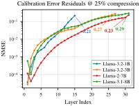

Why it matters왜 중요한가
Every activation-aware SVD method quietly assumes the model it is calibrating against is the model it is producing. It isn't — and the gap compounds with depth.
활성값 기반 SVD 기법은 하나같이 "캘리브레이션 대상 모델 = 내가 만들고 있는 모델"이라고 조용히 가정한다. 사실이 아니고, 그 간극은 깊이를 따라 누적된다.
The recipe that made training-free low-rank compression competitive with fine-tuning-based methods — MoDeGPT, UniQL — has two pre-processing steps. First, push ~128 calibration samples through the model and record input covariance statistics at every weight or module, so the truncation minimizes output error rather than weight error. Second, score every layer's importance once (typically a Block Influence score) and hand out non-uniform rank budgets accordingly. Both steps run before compression, against the untouched model. The authors' point is that this makes the whole pipeline open-loop: by the time you reach layer 20, the activations arriving there in the deployed model look nothing like the activations you calibrated with, and the layer you decided was unimportant may have become the load-bearing one.
학습 없는 저랭크 압축을 파인튜닝 기반 기법과 겨룰 수 있게 만든 레시피(MoDeGPT, UniQL)에는 두 개의 전처리 단계가 있다. 첫째, 캘리브레이션 샘플 약 128개를 모델에 흘려 각 가중치·모듈 입력에서 공분산 통계를 수집한다. 가중치 오차가 아니라 출력 오차를 최소화하는 절단을 하기 위해서다. 둘째, 각 레이어 중요도를 한 번 매기고(보통 Block Influence 점수) 그에 따라 랭크 예산을 불균등 배분한다. 두 단계 모두 손대지 않은 원본 모델을 상대로, 압축 이전에 실행된다. 저자들의 지적은 이 때문에 파이프라인 전체가 개루프(open-loop)가 된다는 것이다. 레이어 20에 도달할 즈음이면 실제 배포 모델에서 그곳에 들어오는 활성값은 캘리브레이션에 쓴 활성값과 전혀 다르고, 중요하지 않다고 판정했던 레이어가 정작 하중을 받는 레이어가 되어 있을 수 있다.

By the numbers핵심 숫자
The headline table핵심 표
| Method | Llama-3.2-1B | Llama-3.2-3B | Llama-3.1-8B | Llama-2-7B |
|---|---|---|---|---|
| Original (uncompressed) | 60.69 | 68.12 | 73.98 | 68.86 |
| SVD-LLM | 36.30 | 36.64 | 39.27 | 43.34 |
| MoDeGPT | 41.33 | 46.25 | 50.94 | 53.44 |
| UniQL (base) | 41.27 | 48.93 | 56.06 | 56.42 |
| Ours (C) | 42.25 | 50.40 | 56.02 | 56.26 |
| Ours (C+R) | 42.54 | 50.62 | 56.28 | 56.63 |
In one diagram한 장의 그림
The two corrections두 개의 보정
Compress against what the model will actually see
The reconstruction objective changes from min‖WX − ŴX‖² to min‖WX − WX̂‖², where X̂ is the activation produced by the already-compressed prefix of the model. Concretely: stop collecting all covariance statistics in one pre-processing sweep, and instead interleave — compress layer ℓ, run the calibration batch through the compressed layer ℓ, hand the result to layer ℓ+1. The authors note this costs essentially nothing, since the same forward pass is being done either way, just deferred. They also point out the idea is not new in post-training quantization (QEP, GPTAQ and others debate exactly this), but had "scarcely been applied" to low-rank decomposition.
복원 목적식이 min‖WX − ŴX‖²에서 min‖WX − ŴX̂‖²로 바뀐다. 여기서 X̂는 모델의 이미 압축된 앞부분이 만들어낸 활성값이다. 구체적으로는 공분산 통계를 전처리 한 번에 몰아서 모으지 말고 교차 실행한다. 레이어 ℓ을 압축하고, 캘리브레이션 배치를 압축된 레이어 ℓ에 통과시키고, 그 결과를 레이어 ℓ+1에 넘긴다. 어차피 같은 순전파를 하는 것이고 시점만 미룬 것이라 비용은 사실상 0이라고 저자들은 말한다. 이 아이디어 자체는 PTQ 쪽에서는 새롭지 않지만(QEP·GPTAQ 등이 정확히 이 지점을 두고 논쟁 중이다) 저랭크 분해에는 "거의 적용된 적이 없었다"는 점도 짚는다.
Re-measure importance after the model has moved
Rank budgets come from Block Influence, BIi = 1 − CosSim(Xi, Xi+1) — how much a layer transforms its input. Compression shifts these: on Llama-3.2-1B at r=0.85, layer 12 falls 0.13 → 0.10 while layer 15 rises 0.49 → 0.54, i.e. their relative ordering changes. So run compression for N rounds; after each, re-score BI on the compressed model and nudge the ratios with a dampened delta rule φ̂ᵢ = φᵢ + Pr(α·Δᵢ, rtarget), where Δᵢ is the max-normalized BI change and α ∈ {0.01, 0.05}. The dampening is deliberate — the authors argue each layer's original specialization deserves partial preservation rather than being overwritten by the new estimate. Exit early once φ converges.
랭크 예산은 Block Influence, 즉 BIi = 1 − CosSim(Xi, Xi+1)에서 나온다. 레이어가 입력을 얼마나 변형하는가를 재는 값이다. 압축은 이 값을 움직인다. Llama-3.2-1B에서 r=0.85일 때 레이어 12는 0.13 → 0.10으로 내려가고 레이어 15는 0.49 → 0.54로 올라간다. 상대 순위가 바뀐다는 뜻이다. 그래서 압축을 N 라운드 돌린다. 각 라운드가 끝나면 압축된 모델에서 BI를 다시 매기고, 감쇠된 델타 규칙 φ̂ᵢ = φᵢ + Pr(α·Δᵢ, rtarget)로 비율을 조금씩 민다. Δᵢ는 최대값으로 정규화한 BI 변화량이고 α ∈ {0.01, 0.05}다. 감쇠는 의도적이다. 각 레이어가 가진 고유한 특화는 새 추정치로 덮어쓸 게 아니라 어느 정도 보존되어야 한다는 것이 저자들의 논거다. φ가 수렴하면 조기 종료한다.
How it works어떻게 작동하나
- Initialize the rank budget. 랭크 예산 초기화. Score every layer's Block Influence on the original model and turn it into per-layer rank ratios φ via a temperature-scaled softmax, subject to the global target ratio rtarget. Identical to UniQL/MoDeGPT so far.원본 모델에서 레이어별 Block Influence를 매기고, 온도 스케일 softmax로 레이어별 랭크 비율 φ로 변환한다. 전역 목표 비율 rtarget 제약을 만족해야 한다. 여기까지는 UniQL·MoDeGPT와 동일하다.
- Compress layer by layer, updating calibration as you go. 레이어 단위 압축, 캘리브레이션은 진행하면서 갱신. For each layer, apply the joint decomposition at ratio φℓ — then immediately forward the calibration batch through the newly compressed layer, so layer ℓ+1 calibrates on X̂ rather than X.각 레이어에서 비율 φℓ로 joint decomposition을 적용한 뒤, 곧바로 캘리브레이션 배치를 방금 압축된 레이어에 통과시킨다. 그래야 레이어 ℓ+1이 X가 아니라 X̂로 캘리브레이션된다.
- Re-score and blend. 재측정 후 혼합. With a full compressed model in hand, recompute BI scores on it, take the max-normalized difference from the original scores, and apply the dampened delta update to get a refined ratio vector φ̂ that still respects the global budget.압축된 모델이 통째로 나오면, 그 모델에서 BI 점수를 다시 계산하고, 원본 점수와의 차이를 최대값 정규화한 뒤, 감쇠 델타 갱신을 적용해 정제된 비율 벡터 φ̂를 얻는다. 전역 예산 제약은 그대로 지킨다.
- Repeat or exit. 반복 또는 종료. If the divergence between φ and φ̂ is below ε, stop; otherwise set φ ← φ̂ and re-run the whole compression from the original weights. In practice N ∈ [1, 3] rounds is enough — and the best (α, N) turns out to depend on model family, size and compression rate.φ와 φ̂의 발산도가 ε 미만이면 멈춘다. 아니면 φ ← φ̂로 두고 원본 가중치에서부터 전체 압축을 다시 돌린다. 실제로는 N ∈ [1, 3] 라운드면 충분하다. 다만 최적의 (α, N)은 모델 계열·크기·압축률에 따라 달라진다.
What to take away그래서, 가져갈 것
Two lines of code-level change, no gradients, no fine-tuning — and it stacks on top of whatever training-free decomposition framework you already run. The calibration fix in particular is close to free: it only reorders when the forward pass happens.
코드 두 줄 수준의 변경, 그래디언트 없음, 파인튜닝 없음. 이미 쓰고 있는 학습-없는 분해 프레임워크 위에 그대로 얹힌다. 특히 캘리브레이션 수정은 공짜에 가깝다. 순전파를 언제 하느냐의 순서만 바꿀 뿐이다.
The real contribution may be the diagnosis, not the fix. "Compression changes the thing you are measuring" is a general failure mode, and the paper gives it two clean instruments: per-layer activation NMSE and BI drift. Anyone building a compression pipeline can run both in an afternoon.
진짜 기여는 처방이 아니라 진단일 수 있다. "압축이 측정 대상 자체를 바꾼다"는 것은 일반적인 실패 양식이고, 이 논문은 그것을 재는 깔끔한 계측기 두 개를 준다. 레이어별 활성값 NMSE와 BI 드리프트. 압축 파이프라인을 만드는 사람이라면 반나절이면 둘 다 돌려볼 수 있다.
Consistency beats peak performance in their framing. The method rarely posts the single highest number; it posts the smallest average distance to the highest number (0.50 pp vs 1.22 and 1.71). Whether that is the right objective is a genuine question — but for shipping one compressed model to one device, it is arguably the honest one.
이 논문의 프레이밍에서는 최고 성능보다 일관성이 이긴다. 이 기법은 단일 최고 수치를 찍는 일이 드물다. 대신 최고 수치까지의 평균 거리가 가장 짧다(0.50 pp 대 1.22, 1.71). 그게 옳은 목적함수인지는 진짜로 논쟁거리다. 다만 압축 모델 하나를 기기 하나에 실어 보내는 입장에서는 정직한 기준이라고 볼 만하다.